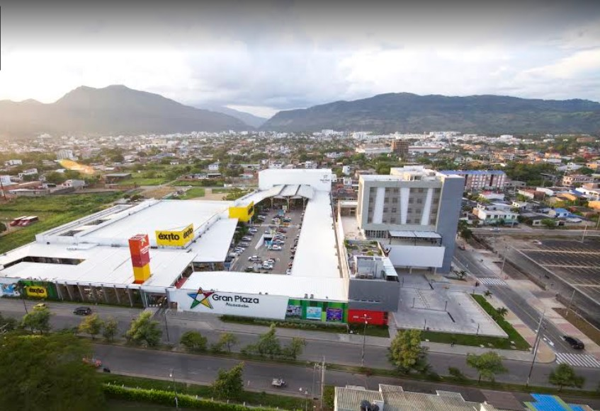
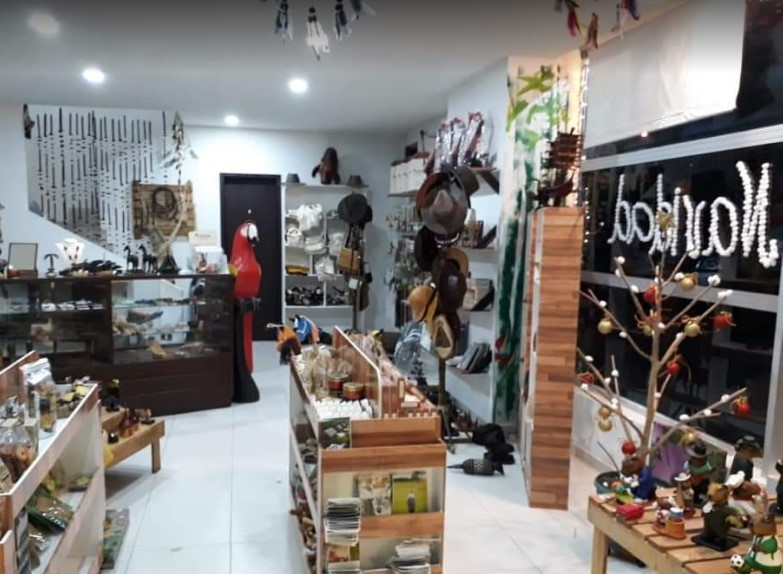

Centro comercial Alcaraván
Es un centro comercial pequeño, pero con una variedad normal de almacenes, su plazoleta de comida a mejorado y puedes encontrar diferentes variedades de comida para una mejor calidad de servicio, el servicio de parqueadero no se cobra por tiempo.
Dirección: Calle 30 #26-29, Yopal, Casanare
Centro comercial Hobo

Es un centro comercial muy pequeño, pero es el único que cuenta con una cancha sintética en el 2 piso, muy acogida por los amantes del fútbol, tienes varios locales artesanales, y un local de música mexicana llamada Jalisco.
Dirección:Carrera 29 #20-25. Yopal, Casanare
Orinoquía sabor y arte
Tienda de regalos de la región llanera. Artesanías, prendas de vestir y comestibles. Enlazamos las manos y los corazones del Llano con el mundo.
Dirección:Carrera 21 # 7-65. Yopal, Casanare.
Centro comercial Unicentro
Centro comercial Unicentro tiene cantidad de cosas para hacer y comprar, sus locales son variados desde ropa hasta de hobbies y su autoservicio jumbo para las compras del hogar
cuenta con sala de cine y de juegos familiares, estacionamiento gratuito para carros y motos, la plaza de comidas tiene mucho sabor y variedad, tambien cuenta con un casino para
los adultos y taxis frecuentes en la bahía.
Dirección: Carrera 29 # 14-47, Yopal, Casanare.